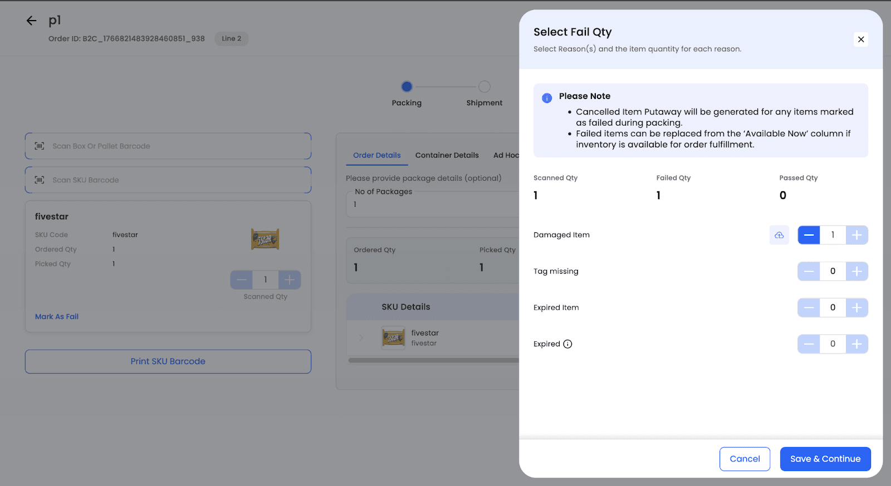
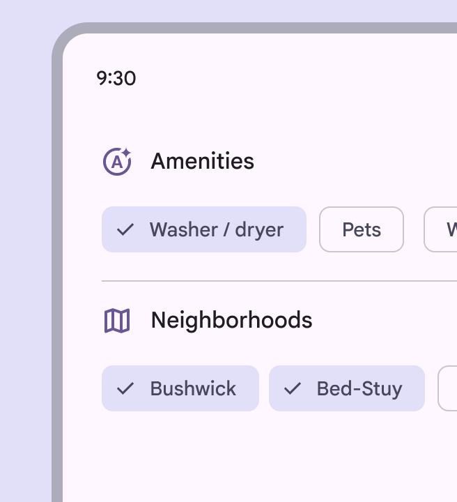

Ghi lỗi ở công đoạn giữa, làm lại có tick tiêu chí
Ví dụ: lệnh LSX26-0003 Ruột sách A5 64 trang, KCS đứng ở Gấp. Chuỗi, tổ, tiêu chí lấy thật từ DB dev:
Cắt tờ (tổ Cắt 2, 2 tiêu chí), Bài in 3 màu 4 màu (CMYK) (Nhóm thợ in máy 4 màu, 4 tiêu chí), Gấp (chưa giao tổ, 4 tiêu chí).
Số sản lượng là SỐ GIẢ ĐỊNH vì Gấp trên DB dev chưa có mẻ nào. Luật ở docs/design-kcs-ghi-loi-giua.md.
Đã đọc trong code trước khi vẽ
- Ngăn Ghi lỗi hiện tại (
KcsKiemForm.tsx, nhánh công đoạn giữa) có: đầu lệnh + khách + chip tổ/máy, ba ô số (Kế hoạch, Tổ đã làm, Lỗi đã ghi), danh sách mẻ, Dặn dò kỹ thuật, thẻ quy cách, khối Ghi lỗi (số, ô chọn "Lỗi do công đoạn", mô tả, ảnh chụp/chọn, "+ Thêm dòng lỗi do công đoạn khác"), Ghi chú, "Lỗi đã ghi trước". Ba phương án dưới GIỮ hết khối bối cảnh, chỉ thay khối Ghi lỗi. - Máy chủ (
kcs.pykiem_cong_doan): công đoạn giữa épchecklist_json = None; mỗi dòng lỗi phải có số > 0, mô tả, ít nhất một ảnh; quy lỗi được về công đoạn đứng trước cùng lệnh; tổng lỗi ≤ số tốt tổ đã ghi; tối đa số ảnh mỗi lần ghi. - Dữ liệu sơ đồ trả
checklistcủa TỪNG công đoạn (bản chụp lúc phát hành), nên ngăn ở Gấp lấy được tiêu chí của Cắt tờ và Bài in mà không cần thêm API. - Bước cuối đã có thẻ công đoạn
KcsTheCongDoan(Đạt / Có lỗi, tick mục hỏng, một số, ảnh, mô tả tự dựng). Mockup D/E/F cho Kiểm hàng còn chờ chọn; E đề xuất một khuôn cho cả Kiểm hàng và Ghi lỗi. Phương án C dưới đi theo hướng đó.
Tham khảo đã mở và chụp



Có mở nhưng không dùng: Odoo hộp kiểm chất lượng (chỉ một ô ghi chú và nút Xác nhận, không có lý do lỗi), Tulip mẫu theo dõi lỗi (ảnh tài liệu chỉ có màn xem bảng lỗi, không có màn ghi), GitHub Primer bảng chọn (hợp danh sách dài, mỗi công đoạn ở đây chỉ 2 đến 4 câu). Trang SafetyCulture chuyển sang trang khác, không chụp được.
Khác luật hiện nay
Số lỗi theo TỪNG câu chứ không một số cho cả công đoạn. Lem mực 12, lệch dấu 5 ghi tách được, báo cáo Theo tiêu chí có luôn cột số lỗi.
- Lưu: mỗi câu có số là một dòng lỗi, mô tả chính là câu đó, không phải gõ.
- Ảnh: nút ảnh trên từng dòng. Máy chủ hiện bắt mỗi dòng một ảnh; nếu chọn A thì nên nới thành mỗi công đoạn ít nhất một ảnh, không thì chụp nhiều quá.
- Lệch với bước cuối, nơi một thẻ chỉ một số. Chọn A thì nên đổi cả bước cuối cho đồng bộ.
Thử: bấm + ở "Không lem mực" của Bài in vài lần, rồi bấm ô ảnh.
Giữ luật bước cuối
Bấm chip là chọn câu hỏng. Nhóm nào có chip chọn thì mở ô số lỗi, ảnh, mô tả của nhóm đó. Một công đoạn một dòng lỗi, mô tả tự dựng từ câu đã chọn.
- Mọi câu bày sẵn, nhìn là thấy, không phải mở gì.
- Lệnh 8 công đoạn thì khối dài, phải cuộn.
- Khuôn khác thẻ ở bước cuối: KCS học hai kiểu.
Một khuôn cho cả hai chỗ
Mỗi công đoạn được quy lỗi là một thẻ gập, chỉ có nút "Có lỗi". Bấm thì thẻ mở: tick câu hỏng, số, ảnh, mô tả. Chính là thẻ đang chạy ở bước cuối, bớt nút Đạt vì công đoạn giữa không xét đạt.
- Ít code mới nhất: dùng lại
KcsTheCongDoanvà luật khoá nútlyDoKhoa. - KCS học một lần, dùng hai chỗ. Nếu sau này chọn E cho Kiểm hàng thì cả hai cùng đổi một lần.
- Thêm một lần bấm "Có lỗi" so với B.
| Tiêu chí | Bước cuối xét | Bước cuối hỏng | Bắt giữa chừng |
|---|---|---|---|
| Màu đúng mẫu đã ký | 3 | 0 | 0 |
| Chữ rõ, không mất nét | 3 | 0 | 0 |
| Chồng màu khớp, không lệch dấu | 3 | 1 | 0 |
| Không lem mực, không bẩn nền | 3 | 0 | 2 lần |
Không gộp hỏng bước cuối với lỗi bắt giữa chừng: bước cuối có lần xét làm mẫu số, ghi giữa chừng thì không. Phương án A thì cột cuối ghi số lỗi (ví dụ 17 tay sách) thay vì số lần.